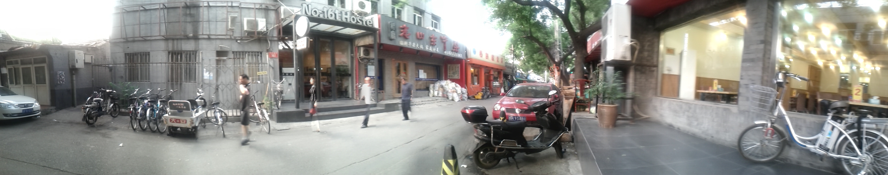

Beijing Go Club
When
Every Tuesday 7:30pm - 11:00pm
What
We're an amateur go club. We have about 8-10 people every week, about half foreigners and half locals. We play games, teach people how to plan, do reviews, and talk about go. We also make up go variants, talk about the pro world, go over games from magazines, and have internal rivalries. The regular members rank from beginners, to a big group around 8k-1d KGS, and then 4d, 5d, 8d, and pro. We have a few beginners coming every week - we have teachers to show the basics, experienced players to play teaching games, or else beginners can just match up with each other and play for fun.
The club provides boards and stones, and attendance is free. We arrive at around 7:45 and stay until about 10:30 or 11, every Tuesday night, all seasons. Before playing, some people go to get dinner across the street at a hotpot place, or a nearby chuar place, from about 6:30. You're welcome to join that or just come to play later!
Where
We meet in a cafe in a little hostel called "No. 161 Hostel". It's near the center of the city and is pretty close to a subway stop (line 5). The cafe is cheap and comfortable.

Directions
Subway: get off at the line 5 station Dong Si (NOT Dong si shi tiao!) Exit C. Go straight (south) for about 2 minutes and then turn left onto "Lishi Hutong". Very soon, you'll see the place on the left. We meet at the little cafe in the back.
Taxi: get off at Dong Si subway station (~20 kuai from dzm, maybe 50 from wu dao kou) and then follow the above directions.
Mailing List
I send out an email every week announcing our next meeting. Send me an email at ernie@beijinggoclub.com, and I will add you!
Pictures!

Playing go outside september 2012

big hotpot dinner september 2012
Studying Go
If you are a total beginner, you should Download Igowin - it's a little go program you can play go against.
This is a great way to learn the rules and the basic idea, without anybody looking over your shoulder. When you start, just click around til you figure out what's going on. It'll start you with a big advantage. Once the computer passes, click "pass" yourself and it'll score the game. If you keep winning, it'll give you less and less of an advantage.
You can also check out Go Child, a really fun site with lots of problems from absolute total beginner level up to higher levels. It's designed to make the game interesting for kids, and it achieves its purpose well.
If you have been playing for a while, and want to seriously get better, I recommend goproblems.com.
Make an account and try the time trials, or just go through the problems. After logging in, click 'problem', 'all unsolved', and with a difficulty of 'at least 25k'. You should be able to blaze through these at first, but keep going. As you have solved more and more, remaining problems will get harder and harder until you find your level. Most problems here have variations showing the continuations, too, which is good for complex problems. You can also add comments with variations you think are wrong or missing. This site can get you all the way from 'just learned the rules' up to very high amateur level. The more effort you put in here, the more you will get back over the board. An interesting thing about people studying to be pro is that they spend more time doing problems, especially life and death problems, than they spend actually playing games.
Techniques
- Be 100% sure you have the right answer to all variations before you play it out
- Don't guess. Try to visualize the stones in your mind
- Diligence will be rewarded. Every single new shape and key point you learn will win you multiple games later.
- Being good at problems will get you sudden wins and resignations, which are fun - save all that boring endgame.
Playing Online
If you want to play games online, KGS Go Server is a good place to play. Playing against people your own level is the most fun, too. Several of us are online a lot of the time there. Feel free to say hi! Go club members on there are 'requires' - Ernie, 'hairiu' - Gary, 'aitkensam' - Sam, and a bunch more. Also, join the beijing go club room, and you'll usually find someone.
Also, here is a local copy of the modified cgoban client called cgoban-h, which has a number of improvements over the official version. (this is a new version, which works with KSG 3.5 (updated january 2012)). This is included here as a demonstration of the great usability improvements possible in the KGS client; however, it's not officially approved by the KGS apparatchiks. To try it, right-click and do 'save as' - then, run the file and connect to kgs in the normal way. (on linux, java -jar cgoban-h.jar, once you have java in your path ("which java" has to succeed))
Another way to play online
Dragon Go Server is a "slow game server". You play very slow games through your browser - maybe 1 move/day. You can have multiple games going on at the same time, and every day log in, check which ones your opponent has moved in, and reply. It's a pretty fun way to challenge yourself - there are some tough players there. The lack of time pressure at all really makes it interesting to play. if you play there, look me up - my username is 'kouchi'.
Last modified: June 2013
The Beijing go club was started sometime before 2008 by Greg May & has been run by Mark Pinner from 2008-2009 and Ernie from 2009-today.
We have met in about 6 or 7 different places around the city, but the current one is the best.